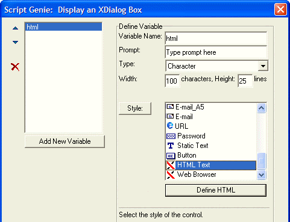
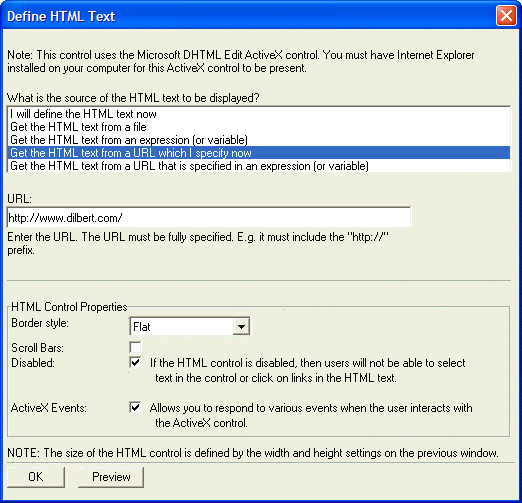
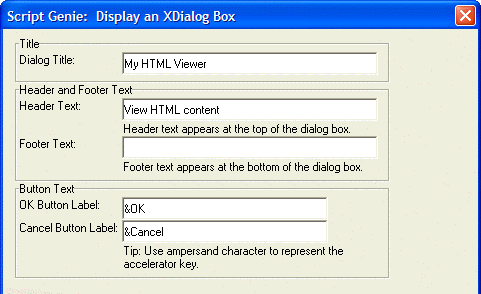
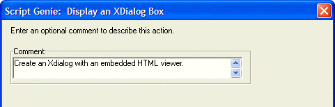
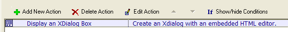

HTML Editor Style Xdialog Example
The Xdialog Genie supports an HTML ActiveX control, which adds the ability to display an HTML page within an Xdialog form. Within the Action Scripting Editor, select "Dialog Boxes" and "Display an Xdialog Box".
Step one is to specify the variable associated with the HTML control and the control's dimensions.

Step two is to specify how the HTML text will be provided. You can optionally enable ActiveX events (for which you will have to write custom code).

Next, you set the name and scope of the return variable from the underlying UI_DLG_BOX() function.

Next, you set the dialog title and other text that might appear on the dialog.

You can specify a comment for the action.

The Action entry appears similar to the following image.

See Also
Internet Browser Style Xdialog